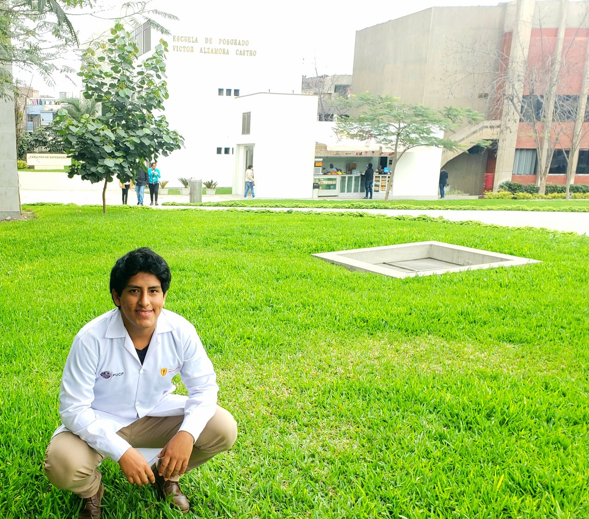

Estudiante de Ingeniería Biomédica PUCP - UPCH. Embajador de BiiaLab y certificado en neuro-oratoria, neurociencias y
networking. Estudio corto sobre "metabolismo y nutrición" en el centro de investigación y desarrollo "Igelösa" - Suecia.
Apasionado por la carrera de Ing. Biomédica, por la rama de Ing. de Tejidos, los retos que afrontar y necesidades por
satisfacer respecto a temas relacionados a la piel. Para el curso de Fundamentos de Biodiseño me encuentro desempeñando
la función de Coordinador de Prototipado y Optimización y así desarrollar el prototipado del proyecto, sea mecánico,
electrónico o ambas, ya que me encargaría de la electrónica y programación. Además una función importante a desempeñar es
la de aumento de productividad respecto al prototipo, disminución de costos y durabilidad del mismo. Debido a que el
trabajo en equipo también doy pequeños aportes relacionados a lo organizacional, ideas para la solución del problema,
relaciones, editorial, mejora en la transmisión de la información, etc.
Victor Giancarlo Sosa Rocha
Coordinador de Prototipado y Optimización